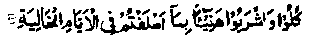

Chapter Seven
12. Abdullah bin Umar appreciates the honesty and Taqwa of a shepherd slave
Nafay‘ Radhiallaho anho relates: Once, Abdullah bin Umar Radhiallaho anho was going on a journey outside Madinah Munawwarah, in the company of his pupils and disciples. When it was time for dinner, they stopped at a place, the cloth was spread and all of them sat for dinner. Meanwhile, a shepherd passed by, with his herd of goats, and greeted them by saying, ‘Assalaam-o-Alaikum’. Ibne Umar Radhiallaho anho invited him to dine with them, but he said that he was fasting. At this, Ibne Umar Radhiallaho anho said, “You are fasting in a shadeless desert, on such a hot day when a hot wind is blowing!" “The shepherd said,“I want to receive my reward for the ‘Past days (Ayyaam-ul-Khaliyah). He was obviously referring to the following Verse from the Holy Qur’an:

(And, it will be said unto those in Jannah). "Eat and drink at ease for that which you sent on before you ‘in past days", (al-Haaqqah: 24)
Ibne Umar Radhiallaho anho then said to him, by way of trial, "We want to buy a goat; name a price and we shall pay it. We shall then slaughter the goat and give you some of its meat to serve you for ‘Iftaar’ (breaking the fast in the evening).’ The shepherd said, "These goats are not mine; I am but a slave and the goats belong to my master." Ibne Umar Radhiallaho anho said, "How can your master know? You can tell him that a wolf devoured a goat" At this, the shepherd pointed to the heavens above and said, "What about Allah? (Who is watching us at all times. How could he deceive Him and say that a wolf had devoured a goat). Ibne Umar was delighted with these words from a simple shepherd and he began to say to himself, again and again, in an ecstasy of joy, "A simple shepherd says, “What about Allah Who is watching us at all times’?’ When Ibne Umar Radhiallaho anho came back to Madinah Munawwarah after the journey, he bought the slave from his master, together with the herd of goats, emancipated him and bestowed the herd upon him as a gift. (Durre Manthur). Such were the deeds of the shepherds of those times!